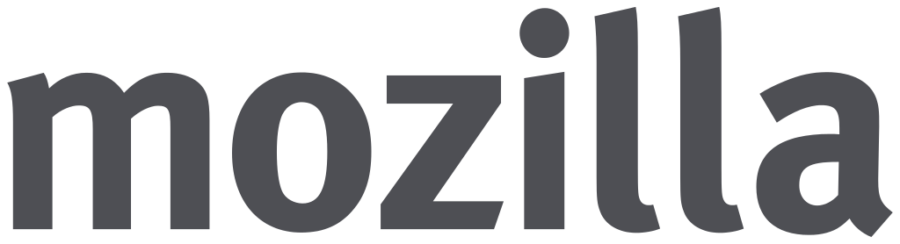
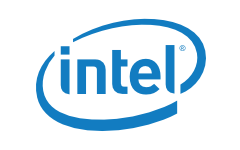
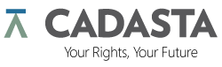
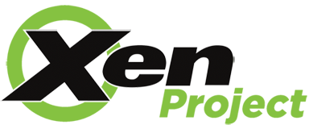
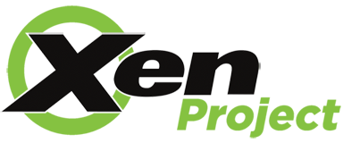
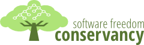

Outreachy helps people from groups underrepresented in free and open source software get involved. We provide a supportive community for beginning to contribute any time throughout the year and offer focused internship opportunities twice a year with a number of free software organizations.
Currently, internships are open internationally to women (cis and trans), trans men, and genderqueer people. Additionally, they are open to residents and nationals of the United States of any gender who are Black/African American, Hispanic/Latin@, American Indian, Alaska Native, Native Hawaiian, or Pacific Islander. We are planning to expand the program to more participants from underrepresented backgrounds in the future.
Free and open source software organizations and supporting companies are invited to express interest in offering internships or sponsoring the program in the next round by February 9, 2017. Applications for the program will open on February 16 and the deadline for applying will be March 30.
Participants
Congratulations to 46 interns accepted for December 2016 - March 2017 round of Outreachy!
Find out who is participating in this round!Sponsors
Outreachy is a project of Software Freedom Conservancy. The internships in the December 2016 - March 2017 round are generously sponsored by the following organizations and companies:
Ceiling Smasher
Equalizer
Promoters

Includers



 
Become a sponsor!

Become a sponsor!
Organization
Software Freedom Conservancy provides organizational home for Outreachy.
GNOME Foundation provides infrastructure support for Outreachy.

Red Hat supports Outreachy by contributing its employee time towards the organization of the program.
Apply
The next round of Outreachy internships will have an application deadline on March 30, 2017, and internship dates from May 30, 2017 to August 30, 2017. Coding, design, documentation and other projects will be available. The applicants will be asked to select a project with one of the participating organizations and collaborate with a mentor listed for that project to make a relevant contribution to the project during the application process. The organizations that will participate in the next round will be announced on February 16, but starting to contribute to one of the organizations that participated in the past will help prepare to apply for an internship with any organization. Many of the mentors participating in the program are happy to offer informal mentorship any time throughout the year, however you need to review the information for the organization you are interested in to see if it has mentors available. Detailed information about the background for the program, requirements for participants, how to select a project, and how to make a contribution is available.
Applicants who are students interested in coding projects will be encouraged to apply for Google Summer of Code as well. The administrators of both programs will coordinate to accept the top applicants for one of the programs.
The accepted participants work remotely, while being guided by their mentor, and receive $5,500 stipend. It's expected that the participants are able to have the internship work be a primary focus during the internship dates and spend 40 hours a week on it.
Learn more!About
Outreachy is the successor of the Outreach Program for Women (OPW). OPW was inspired by Google Summer of Code and by how few women applied for it. The GNOME Foundation first started OPW with one round in 2006, and then resumed the effort in 2010 with rounds organized twice a year. In the May 2012 round, Software Freedom Conservancy joined OPW with one internship with the Twisted project. In the January 2013 round, many other free and open source organizations joined the program. For the May 2015 round, the program was renamed to Outreachy with the goal of expanding to engage people from various underrepresented groups and was moved to Software Freedom Conservancy as its organizational home. In the December 2015 round, the program opened to people of color from groups underrepresented in technology in the United States, in addition to being open to women (cis and trans), trans men, and genderqueer people internationally.
This program is a welcoming link that connects talented and passionate newcomers with people working in free and open source software and guides them through their first contribution. Through Outreachy, participants learn how exciting and valuable work on software freedom can be, while helping us to build a more inclusive community.
Follow @outreachy on Twitter to get the latest news.
Donate
Please donate to Outreachy to help us run the program, fund interns, and support interns' travel to relevant free and open source software events. Software Freedom Conservancy, Inc., the organizational home of Outreachy, is a USA 501(c)(3) organization, and donations made to Outreachy are fully tax-deductible to the extent permitted by law.
PayPal To donate through PayPal, please click on the 'Donate' button below.
Check We can accept check donations drawn in USD from banks in the USA. Please make the check payable to "Software Freedom Conservancy, Inc." and put "Directed donation: Outreachy" in the memo field. Please mail the check to:
Software Freedom Conservancy, Inc.
137 Montague ST Ste 380
Brooklyn, NY 11201
USA
Wire Please write to accounting@sfconservancy.org and include the country of origin of your wire transfer and the native currency of your donation to receive instructions for a donation via wire.